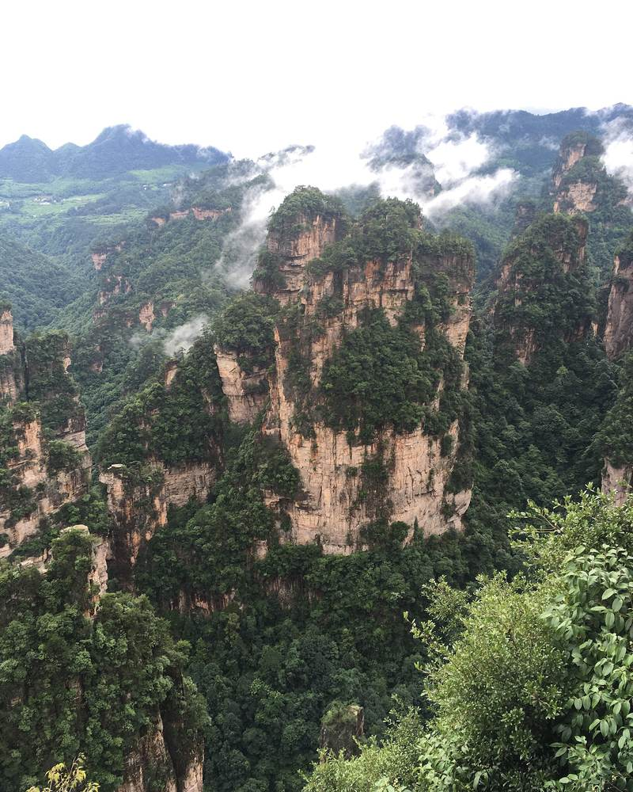
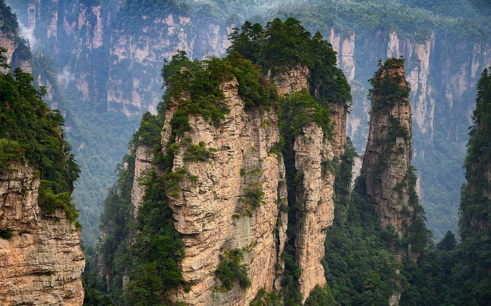
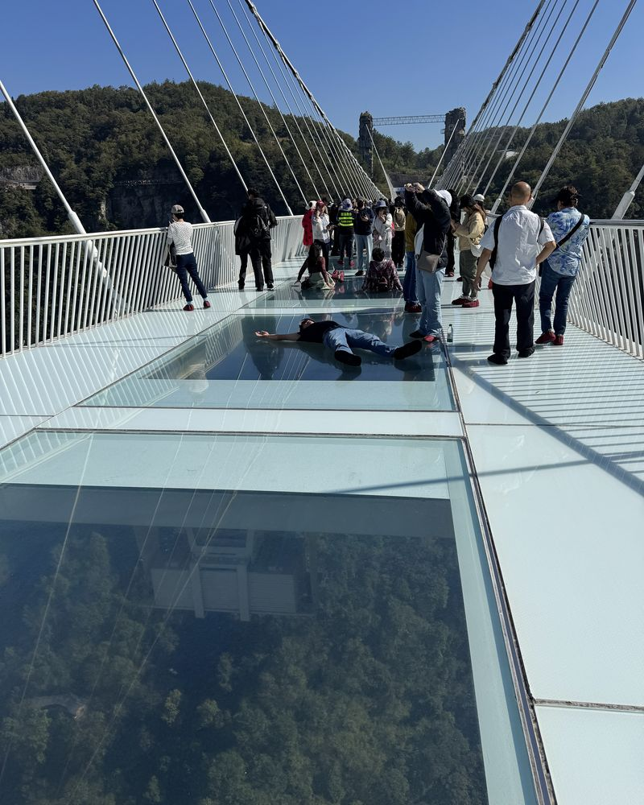
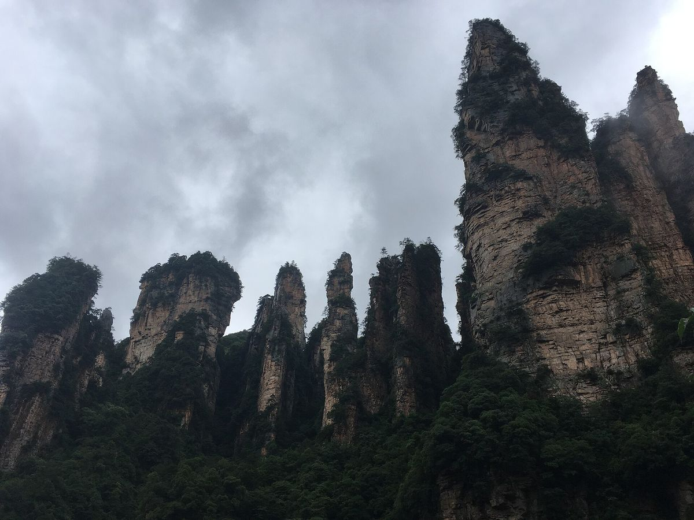

.jpg){kind=link}

,_in_the_Yuanjiajie_%EF%BC%88%E8%A2%81%E5%AE%B6%E7%95%8C%EF%BC%89scenic_area.jpg){kind=link}
National Forest Park
The sandstone pillars, Yuanjiajie, Tianzi Mountain and Golden Whip Stream. Stay near your chosen park entrance.
Read the guide →The Avatar mountains, Heaven’s Gate and the Glass Bridge: find your route through three very different places.


The sandstone pillars, Yuanjiajie, Tianzi Mountain and Golden Whip Stream. Stay near your chosen park entrance.
Read the guide →
Heaven’s Gate and cliff walks. A separate ticket; currently Route C via the cave express cableway.
Read the guide →
A separate scenic area northeast of Wulingyuan. Add it with four days, or choose it instead of Tianmen.
Read the guide →Choose full sightseeing days, excluding arrival and departure. These are fixed suggested routes, with room for queues.
| Decision | A practical starting point |
|---|---|
| How long? | Three full days for the forest park plus one extra attraction; four to include all three areas. |
| Where to sleep? | Wulingyuan for the forest park; the city for Tianmen Mountain. |
| Which entrance? | Match your hotel and route to the East or South entrance. |
| How much? | Separate admission, lifts and booking fees before comparing prices. |
| Which month? | Compare weather and holiday crowds. |

Zhangjiajie is the wider city destination. Wulingyuan is the scenic district and a common base for the forest park. Tianmen Mountain is near the city, outside the forest park.
No. Tianzi Mountain is part of the Wulingyuan park visit; Tianmen Mountain needs a separate ticket and transfer.
Yes. Keep your hotel and destination names in Chinese, reserve admission for your date and save the route offline before leaving your hotel.
Editorial review: 13 October 2026. Operational claims below are dated, not a live status feed.